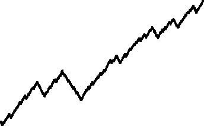

|
 |
| Here are the graphs of the unifractal cartoon examples, H = 0.25 on the left, H = 0.75 on the right. | ||
| ||
| The H = 0.25 graph certainly looks rougher than the H = 0.75 graph. | ||
| To emphasize this point, here is a picture of the graphs side by side, and with the same vertical scale. | ||
| To give this visual difference some computational support, we note that graphs
satisfying | ||
| Here is a sketch of a proof. |
Return to Unifractal Cartoons